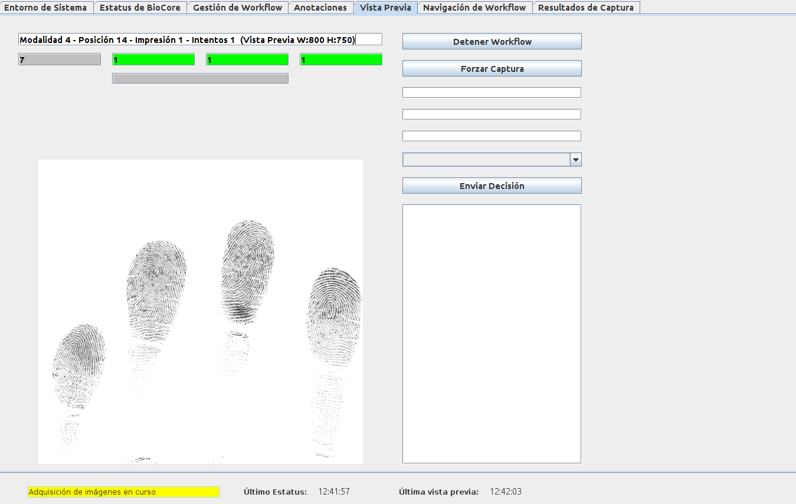
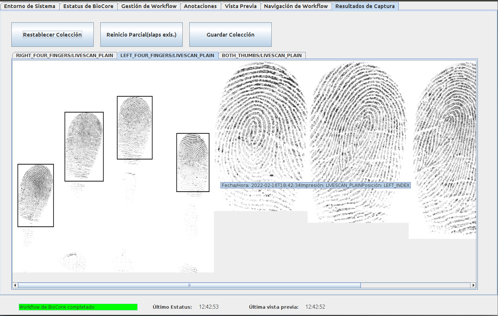
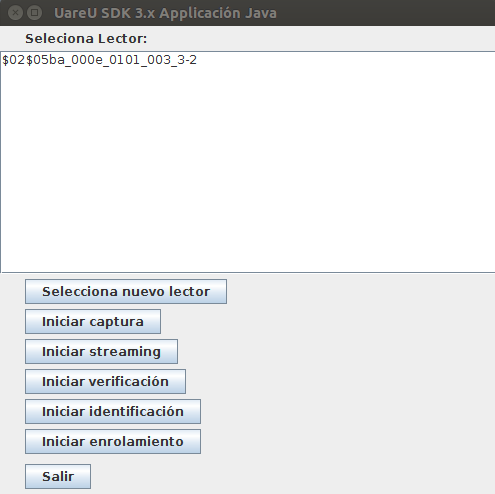
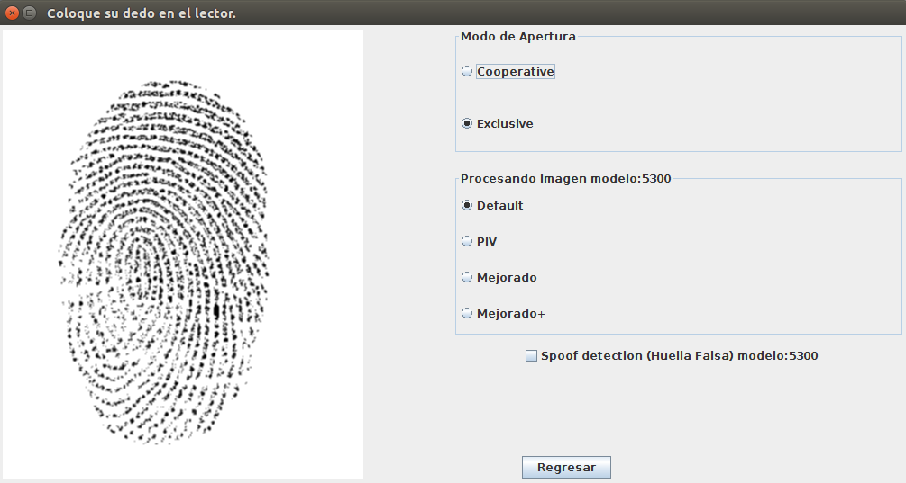

FingerPrint Scanners

Creator | Personal Project | 2021
Project Description
Designed and implemented both a single-fingerprint and a multi-fingerprint scanner interfacing softwares for users to capture, validate and download their fingerprint data. Developed and packaged in JAVA on an Ubuntu environment.
Integrated Spoof detection (Fake Finger) and NIST Fingerprint Image Quality (NFIQ) validation into the interface by configuring third party libraries to work with the scanner’s Ubuntu environment.
Both softwares include:
● Responsive GUI achieved through multithreading
● Scanner’s information
● Capture workflow selection
● Capture impediments identification
● Capture preview
● Final capture segmentation, rotation and download
Screenshots
   Get in touch
I am open for any position, project or collaboration. Please feel free to contact me regarding any opportunity or any question!
-
Address
Seattle, WA 98178
USA -
Email
joaq.lunav@gmail.com -
Phone
(206) 910-1734 -
Social